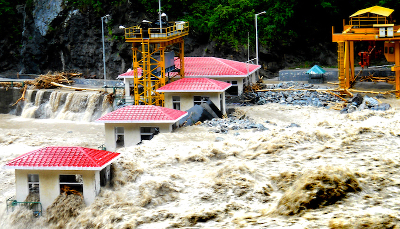
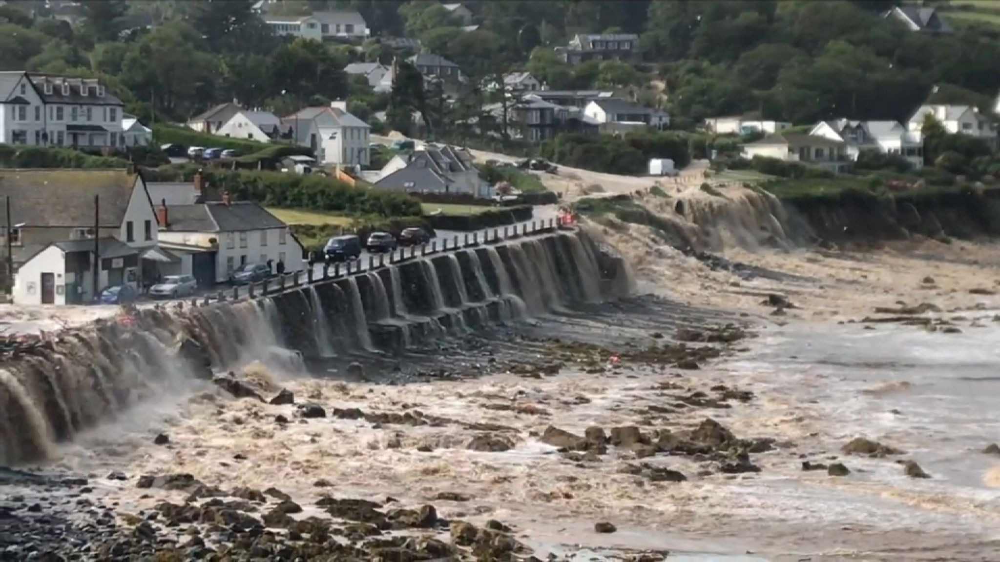
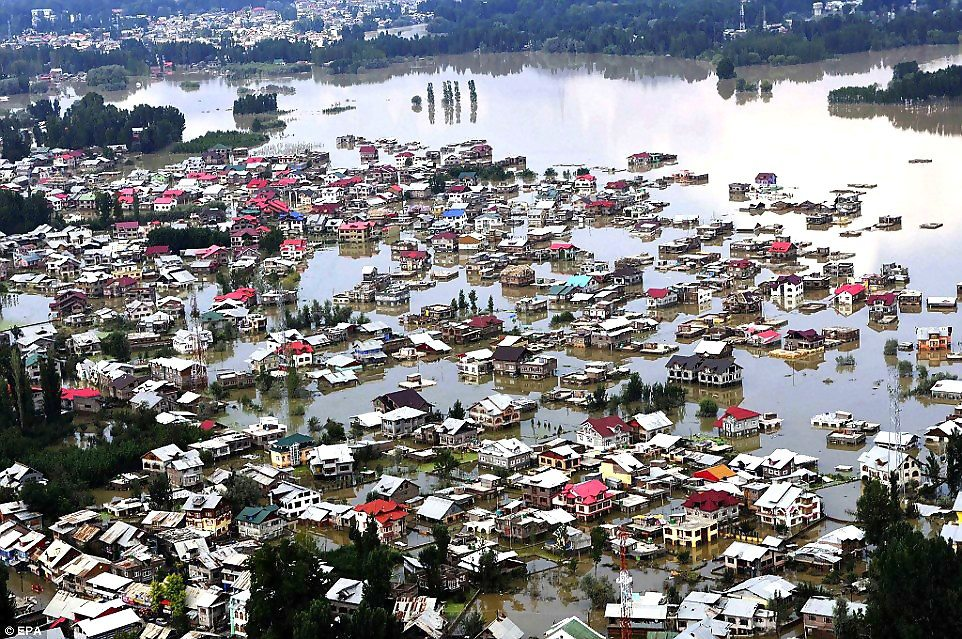
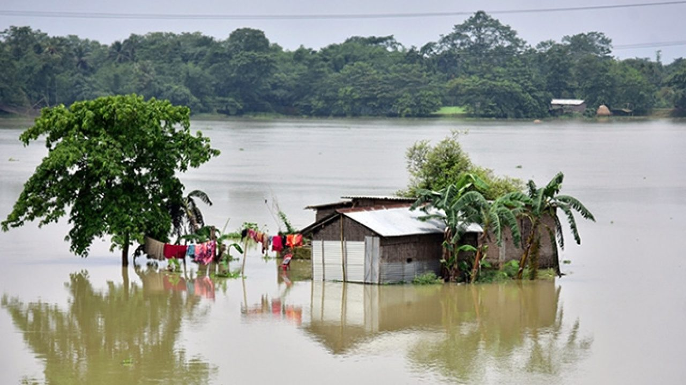
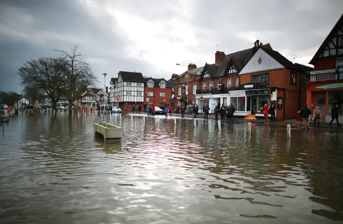

Flash Floods
A flash flood is a rapid flooding of low-lying areas: washes, rivers, dry lakes and depressions. It may be caused by heavy rain associated with a severe thunderstorm, hurricane, or tropical storm, or by meltwater from ice or snow flowing
over ice sheets or snowfields. Flash floods may also occur after the collapse of a natural ice or debris dam, or a human structure such as a man-made dam, as occurred before the Johnstown Flood of 1889. Flash floods are distinguished
from regular floods by having a timescale of fewer than six hours between rainfall and the onset of flooding......
Read More

Coastal Floods
Coastal flooding normally occurs when dry and low-lying land is submerged by seawater.[1] The range of a coastal flooding is a result of the elevation of floodwater that penetrates the inland which is controlled by the topography of the
coastal land exposed to flooding.[1][2] Flood damage modelling was limited to local, regional or national scales. However, with the presence of climate change and an increase in the population rates, flood events have intensified and
called for a global interest in findingout different methods with both spatial and temporal dynamics.
Read More

Urban Floods
Urban flooding is the inundation of land or property in a built environment, particularly in more densely populated areas, caused by rainfall overwhelming the capacity of drainage systems, such as storm sewers. Although sometimes triggered
by events such as flash flooding or snowmelt, urban flooding is a condition, characterized by its repetitive and systemic impacts on communities, that can happen regardless of whether or not affected communities are located within
designated floodplains or near any body of water.[1] Aside from potential overflow of rivers and lakes, snowmelt, stormwater or water released from damaged water mains may accumulate on property and in public rights-of-way, seep through
building walls and floors, or backup into buildings through sewer pipes, toilets and sinks
Read More

Rivar (Or Fluvial) Floods
Floods occur in all types of river and stream channels, from the smallest ephemeral streams in humid zones to normally-dry channels in arid climates to the world's largest rivers. When overland flow occurs on tilled fields, it can result
in a muddy flood where sediments are picked up by run off and carried as suspended matter or bed load. Localized flooding may be caused or exacerbated by drainage obstructions such as landslides, ice, debris, or beaver dams. Slow-rising
floods most commonly occur in large rivers with large catchment areas. The increase in flow may be the result of sustained rainfall, rapid snow melt, monsoons, or tropical cyclones. However, large rivers may have rapid flooding events
in areas with dry climate, since they may have large basins but small river channels and rainfall can be very intense in smaller areas of those basins.
Read More

Ponding (Or Pluvial Flooding)
Ponding is the (typically) unwanted pooling of water, typically on a flat roof or roadway. Ponding water accelerates the deterioration of many materials, including seam adhesives in single-ply roof systems, steel equipment supports, and
particularly roofing asphalt. On low-slope asphalt roofs, ponding water allows the oil solvent components of the asphalt to leach out and evaporate, leaving the roof membrane brittle and susceptible to cracking and leaking in the ponding
location.[1] The time taken for water to saturate a zone, usually from rainfall, causing a pond to form, is referred to as the "ponding time" or "time of ponding"
Read More